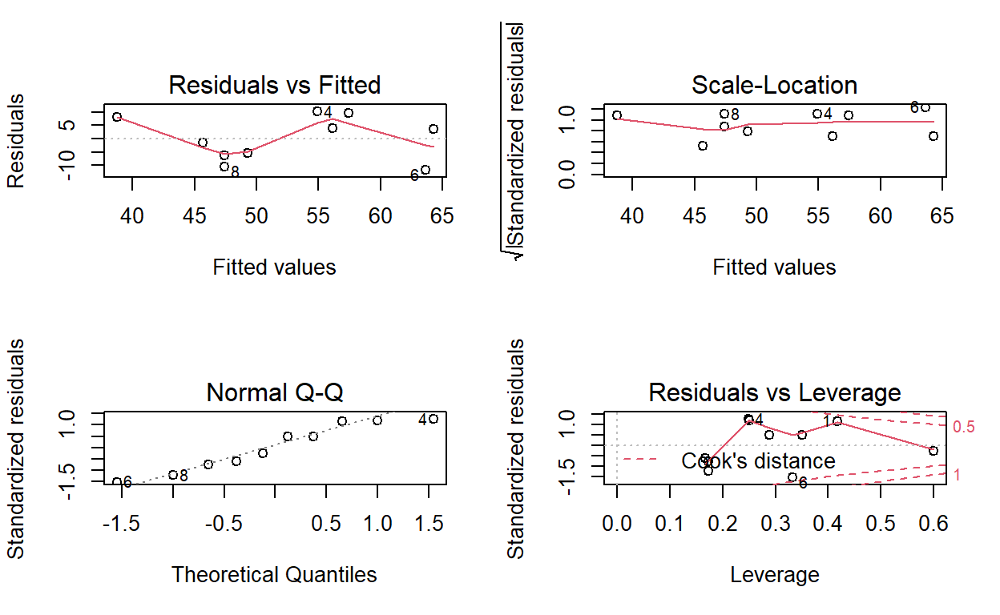

In this post we will explore a few statistical tests and plots that are built into R.
Statistical tests are common-place for detecting significant differences among data fields. In the original article there are several of these, among other statistical techniques introduced. I want to emphesize a few of these and some simple modeling plots in this article. These include:
Chi-squared test
T-test
Paired T-test
Linear regression
ANOVA
bloodtest <- data.frame(id = 1:10,
gender = c("female", "male", "female", "female", "female", "male", "male", "female", "male", "female"),
hospital = c("CLH", "MH", "MH", "MH", "CLH", "MH", "MDH", "MDH", "CLH", "MH"),
doc_id = c(1, 1, 1, 2, 2, 2, 3, 3, 3, 3),
insured = c(0, 1, 1, 1, 0, 1, 1, 0, 1, 1),
age = c(23, 45, 37, 49, 51, 55, 56, 37, 26, 40),
test1 = c(47, 67, 41, 65, 60, 52, 68, 37, 44, 44),
test2 = c(46, 57, 47, 65, 62, 51 ,62 ,44 ,46, 61),
test3 = c(49, 73, 50, 64, 77, 57, 75, 55, 62, 55),
test4 = c(61, 61, 51, 71, 56, 57, 61, 46, 46, 46))
bloodtest id gender hospital doc_id insured age test1 test2 test3 test4
1 1 female CLH 1 0 23 47 46 49 61
2 2 male MH 1 1 45 67 57 73 61
3 3 female MH 1 1 37 41 47 50 51
4 4 female MH 2 1 49 65 65 64 71
5 5 female CLH 2 0 51 60 62 77 56
6 6 male MH 2 1 55 52 51 57 57
7 7 male MDH 3 1 56 68 62 75 61
8 8 female MDH 3 0 37 37 44 55 46
9 9 male CLH 3 1 26 44 46 62 46
10 10 female MH 3 1 40 44 61 55 46mean(bloodtest$age)[1] 41.9median(bloodtest$age)[1] 42.5var(bloodtest$age)[1] 130.5444summary(bloodtest$test1) Min. 1st Qu. Median Mean 3rd Qu. Max.
37.00 44.00 49.50 52.50 63.75 68.00 # Counts of gender by category
table(bloodtest$gender)
female male
6 4 # Counts of hoppital by category
table(bloodtest$hospital)
CLH MDH MH
3 2 5 # Proportions of hospital by category - should always sum to 1
prop.table(table(bloodtest$hospital))
CLH MDH MH
0.3 0.2 0.5 You can look at proportions over two or more variables by extending the table function to include multiple variables. We include three here,
gender
hospital
insured
my2way <- table(bloodtest$gender, bloodtest$hospital, bloodtest$insured)
my2way, , = 0
CLH MDH MH
female 2 1 0
male 0 0 0
, , = 1
CLH MDH MH
female 0 0 3
male 1 1 2# row proportions - prop of gender that fall into hospitals
prop.table(my2way, margin=1), , = 0
CLH MDH MH
female 0.3333333 0.1666667 0.0000000
male 0.0000000 0.0000000 0.0000000
, , = 1
CLH MDH MH
female 0.0000000 0.0000000 0.5000000
male 0.2500000 0.2500000 0.5000000# column proportions - prop of hospital that fall into genders
prop.table(my2way, margin=2), , = 0
CLH MDH MH
female 0.6666667 0.5000000 0.0000000
male 0.0000000 0.0000000 0.0000000
, , = 1
CLH MDH MH
female 0.0000000 0.0000000 0.6000000
male 0.3333333 0.5000000 0.4000000It looks like the for the non-insurred visitors accross the hospitals
the majority proportion (2/3) goes to CLH, and they happen
to be mostly females. Could this be do to some other cause,
such:
Births?
Abortions?
Special female treatments/operations?
That said, there are no females who were insurred at this hospital.
But close behind is MDH with the same issue, but on less a
severse scale only with a 1/2 split of insurred females to insurred
males (as oppose to our 2/3 to 1/3 previous situation at
CLH). For MH we have a nice porportional split
of insurred male and female patients, with slightly more females (6/10
to 4/10).
The chi-squared test is an interesting one I needed to brush up on. It tests two categorical variables. The test will identify if they are different. Pretty nifty. How does it do this? It will examine the ratio of proportions. So point by point, the proportion of observations that fall into the same classes will provide a low chi-square distribution value. That is, if the observations time and time again share the same categories, low chi-square values will yield. If they, however, do not share the same values over all observations, but show variance, the chi-squared distribution value will be higher, resulting in a lower p-value (or in the tail), whih will identify statistical significant, and a difference detected.
# Pretty independent categories
chisq.test(bloodtest$hospital, bloodtest$insured)
Pearson's Chi-squared test
data: bloodtest$hospital and bloodtest$insured
X-squared = 4.4444, df = 2, p-value = 0.1084hospital and insured look pretty
independent.
What about between insurance and gender?
# Pretty independent categories
chisq.test(bloodtest$gender, bloodtest$insured)
Pearson's Chi-squared test with Yates' continuity correction
data: bloodtest$gender and bloodtest$insured
X-squared = 0.97222, df = 1, p-value = 0.3241These do not look as independent, but 0.3 to me is still
pretty low. And based on our frequency analysis, might be something
worth looking into later!
The t-test is not paired, so we do not suspect a
correlation between the variables. This will test whether the difference
between the test1 and gender is significantly different.
t.test(test1 ~ gender, data=bloodtest)
Welch Two Sample t-test
data: test1 by gender
t = -1.1813, df = 6.2951, p-value = 0.2802
alternative hypothesis: true difference in means between group female and group male is not equal to 0
95 percent confidence interval:
-26.670132 9.170132
sample estimates:
mean in group female mean in group male
49.00 57.75 With such a high p-value, we do not suspect the first test to differ much across genders.
Are the results for test1 significantly different accross hospitals? The t-test will only check between categorical variables with two levels or two numeric variables. The ANOVA will expand this to factors of many levels. But the essence is still the same. The f-distribution will detect a strong different of total mean squared to sum of square ratios, and if it is high it may indicate key differences across the categorical variable.
Df Sum Sq Mean Sq F value Pr(>F)
hospital 2 22.5 11.27 0.066 0.936
Residuals 7 1188.0 169.71 With such a high p-value, we do not suspect this category to be very different accross the first test results.
What about
t.test(test1 ~ insured, data=bloodtest)
Welch Two Sample t-test
data: test1 by insured
t = -0.79887, df = 3.9851, p-value = 0.4693
alternative hypothesis: true difference in means between group 0 and group 1 is not equal to 0
95 percent confidence interval:
-28.80380 15.94666
sample estimates:
mean in group 0 mean in group 1
48.00000 54.42857 Insurance indication does not appear to be very different for the first blood test.
The paired t-test is when we suspect correlation, but the question posed is always the same: Are these two things different? Low p-values provide evidence that their mean difference is non-zero (they’re pretty different, in statistical speak).
We test here the difference between the blood tests themselves. Were their values pretty different (after centered, scaled, etc..)?
t.test(bloodtest$test1, bloodtest$test3, paired=TRUE)
Paired t-test
data: bloodtest$test1 and bloodtest$test3
t = -4.3231, df = 9, p-value = 0.001925
alternative hypothesis: true difference in means is not equal to 0
95 percent confidence interval:
-14.014139 -4.385861
sample estimates:
mean of the differences
-9.2 They were significantly different. It is important to remember the assumptions of such a test. This assumes normality of your response variables under consideration.
This has largely been updated by the tidymodels package,
using the engine("lm") method, but the engine is still the
same, so it is important to know how to use it for statistical testing
and more sophisticated data optimization if required.
m1 <- lm(test1 ~ age + gender, data=bloodtest)
m1
Call:
lm(formula = test1 ~ age + gender, data = bloodtest)
Coefficients:
(Intercept) age gendermale
24.4871 0.6206 5.0265 There are for plots produced for the lm object. These
produce:
# plots all 4 plots at once (otherwise one at a time)
layout(matrix(c(1,2,3,4),2,2))
# 4 diagnostic plots
plot(m1)
Some important functions to look at your regression model:
summary()
coef()
residuals()
predict()
confint()
coef(m1)(Intercept) age gendermale
24.4871383 0.6205788 5.0265273 confint(m1) 2.5 % 97.5 %
(Intercept) -3.37869862 52.352975
age -0.04713382 1.288291
gendermale -9.74700686 19.800062df = as.data.frame(cbind(bloodtest$test1, predict(m1), residuals(m1)))
names(df) = c("test1", "prediction", "residuals")
df test1 prediction residuals
1 47 38.76045 8.239550
2 67 57.43971 9.560289
3 41 47.44855 -6.448553
4 65 54.89550 10.104502
5 60 56.13666 3.863344
6 52 63.64550 -11.645498
7 68 64.26608 3.733923
8 37 47.44855 -10.448553
9 44 45.64871 -1.648714
10 44 49.31029 -5.310289We can now supply the lm model into the
anova() function to produce an anova table for our linear
model and the formula provided.
anova(m1)Analysis of Variance Table
Response: test1
Df Sum Sq Mean Sq F value Pr(>F)
age 1 546.77 546.77 6.2997 0.0404 *
gender 1 56.18 56.18 0.6473 0.4475
Residuals 7 607.55 86.79
---
Signif. codes: 0 '***' 0.001 '**' 0.01 '*' 0.05 '.' 0.1 ' ' 1From the author,
“The anova() function is often used to conduct a likelihood ratio test, that compares the fit of nested models to the data. This test allows one to assess whether the addition of several predictors improves the fit of the model.
Simply specify two nested models to anova() to conduct the likelihood ratio test:”
m2 <- lm(test1 ~ age + gender + hospital, data = bloodtest)
anova.results = anova(m2, m1)
anova.resultsAnalysis of Variance Table
Model 1: test1 ~ age + gender + hospital
Model 2: test1 ~ age + gender
Res.Df RSS Df Sum of Sq F Pr(>F)
1 5 525.14
2 7 607.55 -2 -82.414 0.3923 0.6946anova.results$`Pr(>F)`[[2]][1] 0.694584This will see if the second model offers any improvement by adding in a new variable. This will test the ratio of residual sum of squares (total error accross all observations) against one another, then map it onto the f-distribution to discern if it is in the tail. A low p-value will indicate that the second model (first argument) is low OR the first model (second argument) is high (or both in concurrence). If this is the case, the f-distribution will yield a very high value, and the p-value will be very low (i.e., low probability of this value being observed). This will issue to us that there is a statistical difference in models, and your added variable is important information!
In our case, this is not so. So we will not add hospital to the mix. We could experiment and see if adding any other variables might help.
# Let's start with age and see if we can incrementally add valuable information in, only if it improves based on the anova test.
base_model = lm(test1 ~ age, data=bloodtest)
selected_variables = c("age")
for(name in names(bloodtest)){
if(!(name %in% selected_variables) && name != "test1"){
# alternative_model = lm()
hyp_updated_variables = c(selected_variables, name)
formulaString = paste("test1 ~ ", paste(hyp_updated_variables, collapse = "+"))
alternate_model = lm(as.formula(formulaString), data=bloodtest)
alternate_model
anova.results = anova(alternate_model, base_model)
p = anova.results$`Pr(>F)`[[2]]
# print("Testing base against alternate")
# print(formulaString)
# print(p)
if(p <= 0.05){
print(paste("*** UPDATING MODEL TO INCLUDE ", name, "***", sep="") )
print(paste("p.value = ", p))
selected_variables <- c(selected_variables, name)
newFormula = paste("test1 ~", paste(selected_variables, collapse="+"))
base_model = lm(newFormula, data=bloodtest)
}
}
}[1] "*** UPDATING MODEL TO INCLUDE test3***"
[1] "p.value = 0.0394582134317015"
[1] "*** UPDATING MODEL TO INCLUDE test4***"
[1] "p.value = 0.00081872553526069"summary(base_model)
Call:
lm(formula = newFormula, data = bloodtest)
Residuals:
Min 1Q Median 3Q Max
-3.3964 -1.1543 0.1323 1.2704 3.3295
Coefficients:
Estimate Std. Error t value Pr(>|t|)
(Intercept) -33.31021 7.36089 -4.525 0.003995 **
age 0.09134 0.10801 0.846 0.430168
test3 0.63222 0.11645 5.429 0.001619 **
test4 0.77293 0.12487 6.190 0.000819 ***
---
Signif. codes: 0 '***' 0.001 '**' 0.01 '*' 0.05 '.' 0.1 ' ' 1
Residual standard error: 2.799 on 6 degrees of freedom
Multiple R-squared: 0.9612, Adjusted R-squared: 0.9417
F-statistic: 49.5 on 3 and 6 DF, p-value: 0.0001263It looks like no other single variable added any important enough information to decrease residual sum of squares, but the other test results were helpful to know with age. An exercise would be to do this forward, and backward removing some variables also. One could also add pairs, and interactions to see if they are significant. One could even do random sampling of higher order information to see. This anova test to compare if new model variables are important is pretty significant in the statistical toolkit. Hopefully you enjoyed learning a little bit more about it today and how optimization can here be used to learn more about your data as related to statistical distributions and testing.